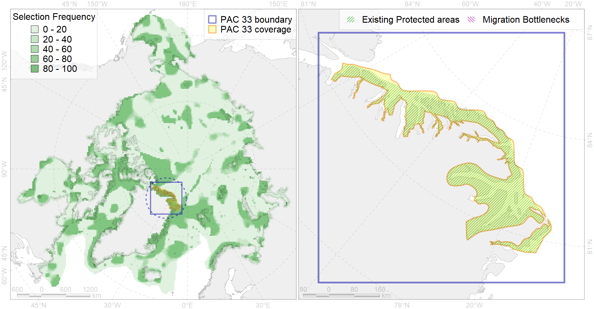

Region 33
Region 33
“ArcNet” scenario 33 achievement for region 33.
Use Accenter for advanced mode.

0
CFs inside of Region completely
3
CFs inside of Region at quarter
7
Complete-targets achievement by Region
12
Half-targets achievement by Region
| CF | Name | Target Achievement for Region | Proportion of Target Achievement in Region | Amount Proportion in Region |
|---|---|---|---|---|
| 9020 | polar bear denning areas of AB (Arctic Basin) subpopulation distribution | 138.5% | 98.4% | 73.8% |
| 6036 | Ivory gull (Pagophila eburnea) East Greenland breeding colonies | 109.5% | 93.4% | 71.0% |
| 3122 | polynya Greenland E | 294.3% | 36.6% | 35.3% |
| 6009 | Brent goose (Branta bernicla hrota) Greenland, Svalbard and FJL breeding&moulting grounds | 129.8% | 24.1% | 23.4% |
| 6095 | 6095 PagophileburneEGreenland breeding colonies | 35.8% | 34.9% | 15.5% |
| 9024 | polar bear denning areas of EG (East Greenland) subpopulation | 22.6% | 21.0% | 14.7% |
| 3007 | Fast Ice distribution in the East Greenland region | 221.3% | 15.7% | 13.3% |
| 7156 | III.5.1. Northeast Greenland shelf and slope | 115.7% | 15.1% | 11.8% |
| 7033 | Northern and Eastern Greenland region | 90.7% | 16.1% | 11.1% |
| 7157 | III.5.1.1. NE Greenland medium and low profile shelf | 155.1% | 14.5% | 9.7% |
| 7158 | III.5.1.2. NE Greenland glacial troughs | 69.1% | 9.3% | 6.5% |
| 3051 | Multiyear Ice distribution in September in the Northern Canadian Archipelago LME | 35.0% | 16.9% | 6.4% |
| 1012 | Atlantic Walrus haulouts in East Greenland | 5.0% | 4.8% | 4.8% |
| 7014 | Core of Canadian - Greenland Province of Arcto-Atlantic zoogeographical region | 53.0% | 7.4% | 3.9% |
| 8040 | Greenland glacial termini | 10.6% | 8.4% | 3.2% |
| 5072 | Narwhal East Greenland stock summer distribution | 5.3% | 3.4% | 2.6% |
| 4074 | Fish zoogeography, Arctic Region, High-Arctic Shelf Province, Canadian-Greenland District (10A) | 34.0% | 5.0% | 2.5% |
| 3054 | Multiyear Ice distribution in September in the Greenland Sea LME | 13.7% | 2.6% | 2.5% |
| 7262 | 7262 I I I 5 1 3 | 3.3% | 2.3% | 2.3% |
| 2059 | Harp seal foraging areas in Greenland as predicted by MIZ distribution | 17.8% | 2.4% | 2.1% |
| 4053 | Range of the Fourhorn Sculpin (Myoxocephalus quadricornis) (F 45), Euro-Asian populations | 58.3% | 3.5% | 1.8% |
| 4055 | Range of the Shorthorn Sculpin (Myoxocephalus scorpius) (F 46), American populations | 51.0% | 2.9% | 1.5% |
| 1004 | Atlantic Walrus Summer Distribution in East Greenland | 4.2% | 2.1% | 1.4% |
| 9006 | polar bear of the EG (East Greenland) subpopulation distribution | 4.3% | 2.1% | 1.4% |
| 3036 | Marginal Ice Zone distribution in July in the Greenland Sea LME | 4.7% | 1.8% | 1.1% |
| 2014 | Bearded seal whelping areas in the north of the Canadian Archipelago | 3.6% | 2.3% | 0.9% |
| 2047 | Ringed seal whelping areas in Greenland region | 6.8% | 1.3% | 0.8% |
| 3033 | Marginal Ice Zone distribution in July in the Northern Canadian Archipelago LME | 3.1% | 1.9% | 0.7% |
| 5045 | Bowhead whale of the Spitsbergen population core distribution | 0.8% | 0.8% | 0.6% |
| 3020 | Marginal Ice Zone distribution in April in the Northern Canadian Archipelago LME | 5.1% | 0.7% | 0.6% |
| 7137 | III.1.1.4. Canadian Archipelago glacial troughs | 12.3% | 1.9% | 0.6% |
| 7134 | III.1.1. 1. Canadian Arctic Archipelago shelf | 7.4% | 1.2% | 0.5% |
| 6029 | Glaucous gull (Larus hyperboreus euceretes) breeding grounds | 4.2% | 1.0% | 0.5% |
| 7136 | III.1.1.3. Archipelago inner shelf of low and medium profile | 6.3% | 1.1% | 0.4% |
| 4037 | Distribution of the Glacial cod (Arctogadus glacialis) (F34) | 4.2% | 1.0% | 0.4% |
| 7021 | Eastern Canadian Archipelago region | 3.8% | 0.6% | 0.4% |
| 7133 | III.1. Canadian Arctic Archipelago shelf and margin | 8.2% | 0.7% | 0.3% |
| 2061 | Ringed seal circumpolar foraging areas as predicted by MIZ distribution | 1.3% | 0.7% | 0.3% |
| 4041 | Range of the Polar Cod (Boreogadus saida) (F35) | 2.3% | 0.9% | 0.3% |
| 3025 | Marginal Ice Zone distribution in April in the Greenland Sea LME | 0.5% | 0.5% | 0.2% |
| 4032 | Range of the Arctic skate (Amblyraja hyperborea) (F2) | 4.7% | 0.4% | 0.1% |
| 4017 | Feeding/ migration area of the Greenland Shark (Somniosus microcephalus) (F1) | 0.4% | 0.3% | 0.1% |
| 7159 | III.5.2. NE Greenland slope | 0.6% | 0.2% | 0.1% |
| 5112 | Arctic Cetaceans (beluga, bowhead, narwhal) winter habitats as predicterd by MIZ | 0.2% | 0.1% | 0.1% |
| 9001 | polar bear of the AB (Arctic Basin) subpopulation distribution | 0.2% | 0.1% | 0.0% |
| 3126 | polynya Baffin | 0.2% | 0.0% | 0.0% |
| 7135 | III.1.1.2. Archipelago outer shelf areas of low and median profile | 0.1% | 0.0% | 0.0% |
| 5046 | Bowhead whale of the Spitsbergen population home range | 0.0% | 0.0% | 0.0% |
| 4079 | Fish zoogeography, Arctic Region, Arctic Abyssal Province (11A -Scandian, 11B - Central-Arctic and 11C - Baffin Deep-sea Districts ) | 0.1% | 0.0% | 0.0% |
| 3006 | Fast Ice distribution in the Canadian Archipelago region | 0.0% | 0.0% | 0.0% |
| 7064 | I.1.1.1. Coastal domain in the Barents Sea | 0.0% | 0.0% | 0.0% |